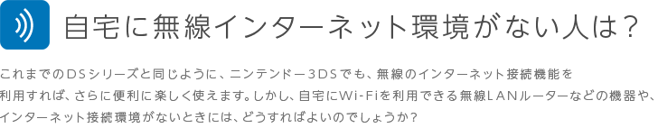

実は「ニンテンドーゾーン」のサービスを提供しているお店では、無料でWi-Fiを利用できるのです。
利用できるお店は、マクドナルドやTSUTAYAなどなど。また「ニンテンドー3DSステーション」を設置している家電量販店や玩具店などでも、インターネットに接続してゲームを楽しむことができます。
利用できるお店は、マクドナルドやTSUTAYAなどなど。また「ニンテンドー3DSステーション」を設置している家電量販店や玩具店などでも、インターネットに接続してゲームを楽しむことができます。


